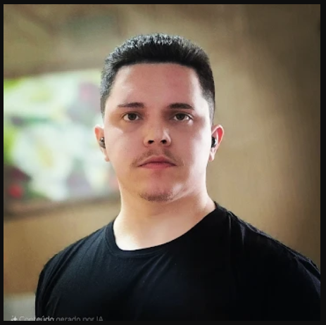

Estudante de Ciência da Computação apaixonado por tecnologia, desenvolvimento web, bancos de dados e criação de experiências digitais modernas. Sempre buscando aprender novas tecnologias e transformar ideias em projetos reais.
Voltar ao site principalOlá! Me chamo Leonardo e sou estudante de Ciência da Computação, apaixonado por tecnologia, programação e inovação. Tenho interesse em desenvolvimento web, modelagem de sistemas, bancos de dados e interfaces modernas.
Atualmente desenvolvo projetos utilizando HTML, CSS, JavaScript, Vue 3, TypeScript e bancos de dados como MongoDB, Neo4j e Cassandra, sempre buscando evoluir minhas habilidades e aprender novas tecnologias.
Além da programação, também sou apaixonado por música, séries, filmes, animações e cultura geek. Meu anime favorito é Dragon Ball, uma obra que me inspira pela evolução constante e superação.
Meu objetivo é crescer profissionalmente na área da tecnologia, participando de projetos inovadores, adquirindo experiência prática e desenvolvendo soluções modernas, eficientes e criativas.
HTML5, CSS3, JavaScript, Vue 3 e TypeScript.
MongoDB, Neo4j, Cassandra e modelagem de sistemas.
Git, GitHub, resolução de problemas, criatividade e aprendizado rápido.
Desenvolvimento de um sistema de comunicação utilizando o protocolo MQTT, criando um Broker e um Client em Java para gerenciamento de mensagens, tópicos e comunicação em tempo real entre dispositivos.
Projeto acadêmico focado em análise, modelagem de sistemas e bancos de dados, envolvendo levantamento de requisitos funcionais e não funcionais, estruturação de dados e desenvolvimento de soluções tecnológicas.
Desenvolvimento deste portfólio utilizando HTML5 e CSS3, criando uma interface moderna, responsiva e visualmente atrativa para apresentar projetos, habilidades e experiências na área da tecnologia.
Sou uma pessoa curiosa, criativa e analítica, que gosta de aprender constantemente e transformar ideias em projetos reais. Busco sempre unir funcionalidade, organização e experiência visual em tudo o que desenvolvo.
"Transformando ideias em experiências digitais através da tecnologia, criatividade e código."
Gostou do meu trabalho ou quer conversar sobre tecnologia, projetos ou oportunidades? Entre em contato!